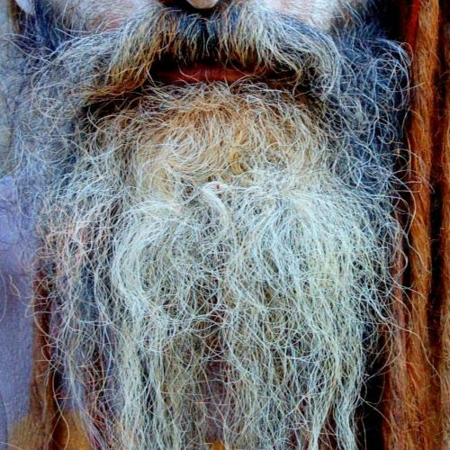
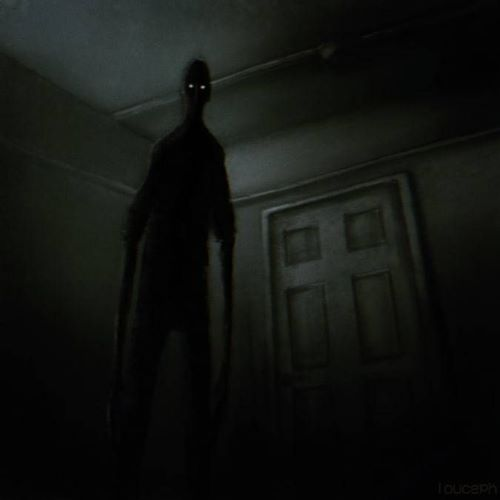
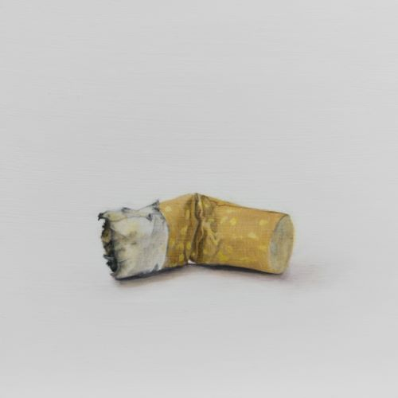
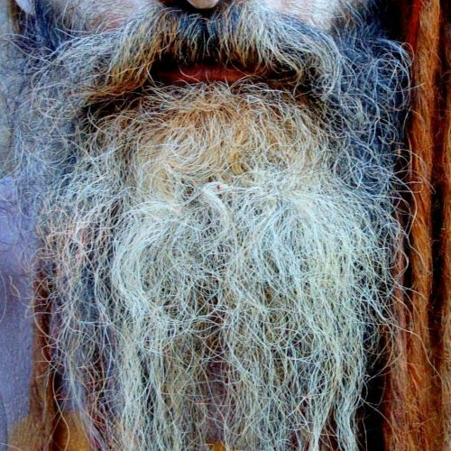
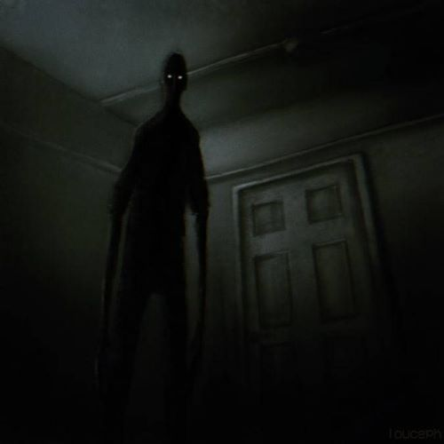
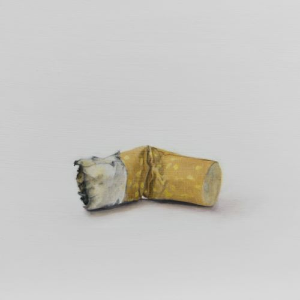

Kiváncsi vagy hogy melyik varjúféle lennél? - Töltsd ki ezt a tesztet és tudd meg! Hogyan biciklizel? Tekerem és tekerem, semmi se állít meg Normálisan? Duh... Hagyom hogy a szél hajtson Milyen szakállad lenne legszivesebben?  Kivel beszélgetnél legszivesebben?  Hova mennél vakációzni? Európa Észak-Amerika Dél-kelet Ázsia Válassz egyet!  Elküldés A te madarad....
Hogyan biciklizel? Tekerem és tekerem, semmi se állít meg Normálisan? Duh... Hagyom hogy a szél hajtson Milyen szakállad lenne legszivesebben?  Kivel beszélgetnél legszivesebben?  Hova mennél vakációzni? Európa Észak-Amerika Dél-kelet Ázsia Válassz egyet!  Elküldés